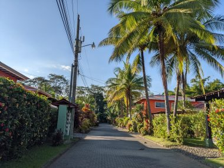

コスタリカの海辺の田舎まちでノマドワーク兼お試し移住体験 ２
エステリロスオエステのエアビーのオーナーの男性とは時折彼がゴミ出しなど外にでてくるときに会話したが、会うときは常に上半身裸の水着姿で裸足。せいぜいたまに靴を履いているくらいで、ついに彼が服を着ている姿は一度もみることがなかった。
彼はアメリカ人で、奥様がコスタリカ人、奥様のお母さまと3人で暮らしている。奥様のお母さまが、貸し出している部屋を掃除したりといった役割を引き受けている様子。お母さまは天気予報より正確に雨が降ることを予想していた。印象に残っているのは、ある日奥様が白ワインが注がれたグラスを持って外に出ていこうとするときだった。挨拶すると、隣の住人とおしゃべりしに行くそう。どこの家も外に椅子とテーブルを置いていて、そこでくつろいで過ごすライフタイルなのだ。なんてすばらしいのだろうとうらやましく思った。
エステリロス（Esterillos）は東を意味するオエステ（Oestes)と西を意味するエステ（Estes)があり、オエステに12日間滞在した後、エステに移動した。
地元の人が多く住み生活感があるオエステとは対照的に、エステリロスエステはアメリカ人やカナダ人といった外国人が多く住む地域で、入り口には警備員がいる、高い塀で囲まれたコミュティーが点在するよそよそしいエリアだった。道を歩いていて聞こえてくえる言葉は英語で、コスタリカというよりはアメリカに住んでいる気になるほど。
↓エステリロスエステで滞在したエアビーのあるコミュニティー
ビーチはBejucoと呼ばれるビーチで、水が引いた後は黒砂が固まるので歩きやすくはだしで散歩するのが気持ちいい。美しい日の出や夕焼け時に散歩するのは格別だ。オエステのビーチと違って岩のない砂浜なので海水浴に適しているかとおもいきや、遠浅だが波が高く強く激しいので危険だった。地元のひとには怒れる波と形容されるほど。実際、若い男のひとが溺れているのを目の当たりにしたこともあった。
ある日、波打ち際を歩いていてふと声が聞こえたような気がした。あたりを見回しても誰もいない。気のせいだったか。それでも気になってあたりを見回す。すると荒れ狂う波間から人の頭がみえ隠れするではないか。あれ、あの人が叫んでいるのではないか。もしや溺れている！？
この浜にはライフガードはいない。遠浅の海なので、浜辺にいるひとたちからその男性までは100メートル以上は距離があり、そのひとたちには気づかれにくい。かつ私たちは泳ぎに来たので携帯電話は家においてきてしまっていた。どうしよう、助けに行っても自分が波にさらわれる危険大。焦って心臓がどきどきする。と、おもったらサーフボードを抱えた若者ふたりが小走りに駆けて海に入っていった。ひとりがサーフボードはらばいに乗ってその男性に近づいたとき、波間が訪れ、溺れていた男性の足が着き、上半身があらわになって歩けるようになった。腰くらいの高さだったが、高波にさらわれてコントロールを失ってしまったのだ。
ビーチの景観は素晴らしいものの、海水浴をのんびりと楽しめないところはこの地の減点要素のひとつになるが、MagicSeaweed という波の高さを教えてくれるサイトを参考に、波が高い日はエアビーで貸してくれたボディーボードを持っていったりして毎日海に入った。
↓続き↓
コスタリカの海辺の田舎まちでワーケーション兼お試し移住体験 ３
↓前の記事↓